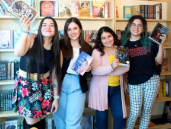
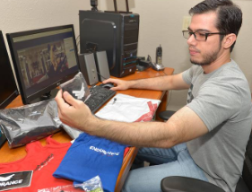

Ya mismito las noticias
Diario Pobre Pero Honrado. Noticias de Pelotillehué y sólo algunas de Cumpao y Buenas
Peras
El mayor diario nacional
Ziganwu, los nuevos blogueros patriotas
Con sus mordaces mensajes de texto y videos critican con frecuencia a los países y medios de comunicación occidentales.
Aman los libros y lo demuestran en sus redes sociales
En el Día Internacional del Libro, conozca algunos creadores de contenido literario para redes sociales en Ecuador.
Modelo ‘sexigenaria’ desfila
“La celulitis, la grasa en mi vientre, los rollitos en la espalda, lo enseño todo sin problema", dice Caroline Ida Ours.
La youtuber que ya no comparte con sus seguidores
El video más visto de la youtuber surcoreana Dawn Lee es uno que seguramente hubiese preferido no tener que grabar nunca.
Qiao Biluo, la glamurosa bloguera china
Se hacía llamar "su alteza Qiao Bilou" y se mostraba como una joven hermosa y glamorosa en sus apariciones en internet.
Hannah Witton, la popular bloguera
Bloggera británica es una millenial conocida por hablar de tabúes. En esta ocasión la británica decidió hablar sobre cómo es tener un estoma en el momento de tener relaciones sexuales
Ricardo Jurado, un blogger con ideas
Un promedio de 5 mil visitas al mes recibe en su blog Comunidad Fitness Ecuador, una plataforma pensada e implementada por Ricardo Jurado para informar sobre actividades deportivas, salud y eventos.
Condenado un bloguero ruso por jugar a Pokémon
La juez Yekaterina Shoponyak declaró a Sokolovsky culpable de incitar al odio religioso y le impuso una pena en suspenso de 3 años y medio de prisión.